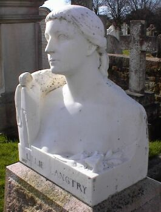

Lé 8 d'avri 1972
Moussieu l'Rédacteu,
Dans ma lettre du 19 févri dé ch't' année j'vouos disais qué j'visitis la ville dé Langtry au Texas, nommée en honneu d'nouot' belle "Jersey Lily". Un anmîn d'ichîn m'a prêté un livre întitulé "Because I loved him - The life and loves of Lillie Langtry", par Noël H. Gerson. Lé livre est pliein d'înformation au sujet d'la vie d'la fanmeuse Jèrriaise tch'était aussi célébre en Améthique comme en Angliétèrre, et l'anmie d'un tas d'grôsses têtes. Ou d'vînt enmouothachie d'un cèrtain riche moussieu Améthitchain nommé Alfred Gebhard, et, en convèrsâtion auve Somerset Maugham un jour, i' lî d'mandit tch'est qu'ou considéthait tch'était l'pus célébre homme dé sa connaîssance, et ou rêponnit qué ch'tait Gebhard. "Bon!" Maugham lî dit, "et pourtchi?" "Viyant qué j'l'aimais!", ou lî rêponnit!
Un tas d'mêssieux d'distînction et d'întelligence avaient eune supèrbe opinnion d'lyi. Par exempl'ye, l'Honorabl'ye W.E. Gladstone, Preunmié Minnistre d'Angliétèrre, dit: "J'sis ordgilleux d'pouver dithe qué Madanme Langtry m'considéthe sén anmîn!" Lé fanmeux peintre John Everett Millais: "I' s'adonne, tout simpliément, qué Lillie Langtry est la pus belle femme dans l'monde!" Lé Président Théodore Rooosevelt des Êtats-Unis: "Oulle est mèrveilleuse, et sa bieauté vouos êgalue!" L'artiste Améthitchain, James Abbot McNeill Whistler: "À la vaie, nou s'crait à rêver. Oulle est si extraordinnaithe qué j'ai même d'la peine à faithe un portrait d'lyi tchi lî fait justice!"
Mais s'n întelligence, pathaît-i', 'tait au ras d'sa bieauté. Oulle avait d'l'esprit comme quatre, et Mark Twain disait qué chein tchi l'êtonnait 'tait qu'oulle avait un vraie don comme actrice dé thiâtre, et Oscar Wilde disait qu'sa bieauté 'tait, en êffet, êbliouissante, mais qué s'n'esprit et s'n'întelligence 'taient extraordinnaithes et qu' l'ensembl'ye 'tait formidabl'ye!
L'auteur Gerson a fait san travas ("homework" comme dit m'n anmîn, l'Député de Veulle) comme i' faut, car i' nouos donne un r'cit bein compliet d'la vie d'Lillie Langtry. Oulle avait chîn fréthes quand ou fut née Emilie Charlotte Le Breton à St. Sauveux lé 13 d'octobre, 1853 - Frank, William, Trevor, Maurice et Clément - et un siexième, Reginald, vit l'jour un coupl'ye d'années auprès. Ou fut garçonniéthe dès ses p'tits jours. Ou savait nouer à l'âge dé quatre ans, et à siex ans oulle allait à j'va à califourchons et sans selle.
Il' taient la bête au dgiâbl'ye lyi et san fréthe Reginald. Ieune dé lus farces 'tait d'mettre un fi d'fé à hauteu d'tête à l'entrée du gardîn du probytaithe, et les mêssieux tch'étaient învités à baithe du thée pèrdaient lus bill-tappeurs à la héche en entrant! Au sé, il' allaient jouarder parmi les tombieaux du chînm'tchiéthe et prétendre tch'il' 'taient des fautômes ou des r'vénants.
Eune séthée oulle allit auve ses fréthes Cliément et Reginald tather et plieunmer l'estatue d'la Reine Victoria* sus la cauchie. Il' avaient apporté l's ôtis nécessaithes, êtchelle, boutchet, etc., et l'estatue fut couvèrte d'tathe et d'plieunmes dé la couronne ès pids. I' fûdrent dêcouvèrts à cause dé la tathe sus faches, mains et habits, et les garçons attrapîdrent la badgiette. Lillie eut à passer 24 heuthes dans sa chambre comme peunnition.

À l'âge dé tchînze ans Lillie p'sait 135 livres et avait chîn pids huit dé haut. Lé lieut'nant Charles Spencer Longley, du régiment en dgèrnison, 'tait l'fis d'l'Archévêque dé Cantorbéry et fut învité à rester au probytaithe par lé Douoyen L'Breton. I' s'enmouothachit d'Lillie et lî proposit l'mathiage. I' fut tellement êtonné quand ou lî dit s'n âge tch'i' d'mandit d'êt' transféthé à un régiment hors Jèrri!
Oulle avait eune vîngtaine d'années quand un bieau yacht nommé Red Gauntlet appathut dans la cauchie en ville, san propiêtaithe, Edward Langtry, à bord. Il 'tait fis d'un bourgeais à Belfast en Irlande du Nord. Ou l'rencontrit et d'vînt amouotheuse du yacht! Lé Sieur Langtry 'tait chînq ans pus vyi qu'lyi et 'tait iun d's anmîns du fréthe William à Lillie. I' tchit en amour dé lyi et i' fûdrent mathiés à l'églyise dé St. Sauveux lé 9 dé mar, 1874. Appathemment, l'fréthe William 'tait dans l's Îndes, mais il arrivit en Jèrri dans ches temps-là pour sé mathier, et li et Cliément, dév'nu Avocat en Angliétèrre, 'taient au mathiage dé lus soeu.
Lillie Langtry eut eune fille, nommée Jeanne Marie, probabliément en 1881. À m'suthe qu'ou grandissait, ou r'sembliait d'pus en pus à sa m'mée, et ou mathyit Messire Ian Malcolm, Membre du Parlement à Westminster, lé 30 dé juîn, 1902. Oulle eut quatre êfants.
Dans l'entretemps Lillie 'tait dév'nue veuve et avait mathiée Messire Hugo de Bathe dans l'êté dé 1899, mais i' né d'meuthaient pon ensembl'ye à l'heuthe dé sa mort à Monaco lé 12 févri, 1929. Ou fut entèrrée dans l'chînm'tchiéthe dé St. Sauveux en Jèrri. Sa fille, auve lé grand d'ses garçons, 'taient à l'entèrrement - Mais Messire Hugo de Bathe né y'était pon.
* Ch'est eune faute. Ch'fut l'estatue du Rouai George II au Vièr Marchi.
Viyiz étout: